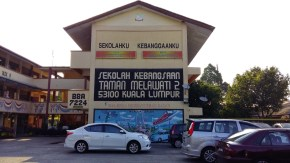
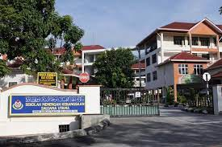

SK TAMAN MELAWATI 2
PRIMARY SCHOOL,2007
I only attended this school for one year at standard one and I know it's short but my family and I moved to another place.
I was always playing in this school and not knowing what i was supposed to do in the first place but it was fun while it lasted.
SK Saujana Utama
PRIMARY SCHOOL,2008 - 2013
I attended this school from standard 2 to standard 6.I had good experience in this school.The teachers try hard for their students but they don't really focus the student who are at the last classes which is sad.I was able to do new things as they do different activities in the school.
SMK Saujana Utama
SECONDARY SCHOOL,2014-2018
I stayed at this school from form 1 to form 5.I made many friends and lost them through the years as i lost track of them when some of them went to boardin school.I was sad at first but i met them when they came back so it was not so bad.My PT3 and SPM result are not something that i am proud of either since i played so much but thankfully i got good enough results to get into my current university.
UITM Arau Perlis Branch
UNIVERSITY,2019-Now

When i first started in this university,I was really nervous.I had never been actually alone in my life so i was anxious about everything as i was worried if can score here or not as well as if i could fit in here or not.
At First,I did not know where to buy my things,how to do laudry well and ironing your clothes.Back at home,I would always do things that did not involve laundry but i had to learn it sooner or later i guess.I was in the computer science diploma programme.I was able to excel in my first semester since it is something i am very interested.I had fun studying here but sadly the coronavirus came.I am about to do my last semester now,I feel a little sad as i cannot have a normal diploma student life as my previous alumni did.